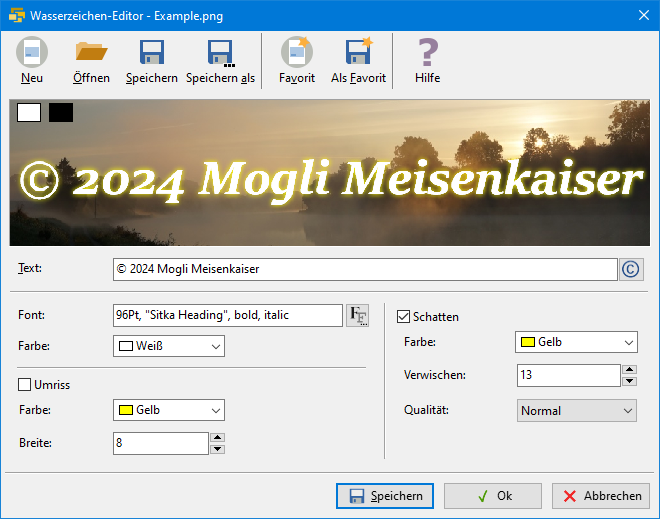

Übersicht
ImageResize 3.5 ist eine App zur Größenänderung von JPEG- und PNG-Bildern. Sie ist für die Erzeugung von Web-Gallerien gedacht und kann viele Bilder auf einmal verarbeiten.
Inhalt
ÜbersichtListe der Bilddateien
Zielverzeichnis
Zielgrößen
Umbenennen und mischen
Wasserzeichen
Qualität
Taggen
Beschleunigte Verarbeitung
Speichern und Öffnen
Kommandozeilen-Parameter
Wasserzeichen-Editor
Fähigkeiten
- Kontextsensitives Hilfesystem
- Resampling (Verkleinerung) von Listen mit Bilddateien
- Resampling jedes Bildes in mehrere Größen
- Nutzt Lanczos-Filterung für gute Ergebnisse
- Optionales Wasserzeichen
- EXIF Tags (Titel, Timestamp, Copyright)
- Unterstützt JPEG- und PNG-Formate
- Kontrolle der Kompressionsqualität
- GUI-, CLI- und API-Schnittstelle verfügbar
- Systematische Dateiumbenennung
- Optionales zufälliges Mischen der Liste
Was sie nicht kann
- Bildverzerrung
- Formatkonvertierung (JPEG bleibt JPEG und PNG bleibt PNG)
- Vorschau
- Alle EXIF tags übertragen
Übersicht
Das Programm benötigt mindestens die folgenden 3 Angaben:
- Eine Liste von Bilddateien oder ein Quellverzeichnis mit Dateifilter

- Ein Zielverzeichnis

- Eine oder mehrere Zielgrößen

Drücken Sie am Ende  um das Resampling zu starten.
um das Resampling zu starten.
Liste der Bilddateien
ImageResize kann viele Bilddateien resampeln. Die Liste besteht aus Pfad/Dateiname und kann
- manuell eingegeben werden
- im Auswahldialog ausgewählt werden
 mit <STRG> und <UMSCHALT>
mit <STRG> und <UMSCHALT> - durch Ziehen von Bilddateien aus dem Windows-Explorer ergänzt werden
- durch Angabe eines Quellverzeichnisses mit Dateifilter angegeben werden
- relative Pfadangaben beinhalten
Die Liste kann JPEG- und PNG-Dateien enthalten. Die Dateinamen können beibehalten oder umbenannt werden. Relative Pfade beziehen sich auf das Arbeitsverzeichnis des Programmes, welches nach dem Laden oder Speichern einer Projektdatei (.irs) der Pfad zu dieser ist.
InhaltZielordner
Ein Zielordner muss angegeben werden. Sie können ihn direkt eintippen
oder mit der Schaltfläche auswählen.
Um Konflikte der Zielnamen zu vermeiden, wenn mehrere Zielgrößen angegeben werden, können Sie entweder mit Umbenennen verschiedene Dateinamen erzeugen, oder indem jede Größe einen eigenen Zielordner enthält. Dazu muss der Name des Zielordners den Platzhalter %SIZE% enthalten.
InhaltGrößen
Eine Größe in Pixeln bezieht sich auf die längere Seite eines Bildes. Gewöhnlich ist die Größe der Originaldatei größer als die des Zieles.
ImageResize kann mehrere Größen für jedes Bild erzeugen. Geben Sie eine Liste von Größen ein,
die mit dem Komma getrennt sind, oder wählen Sie Größen aus den Vorschlägen aus.

Sie können alle Größen angeben, die größer als 0 sind. Die Vorschläge unter der Liste sind unverbindlich.
Sie können die Liste ändern, indem Sie die Löschen-Schaltfläche  klicken. Um eine einzelne Größe zu löschen, markieren Sie zuvor die Größe, oder sie klicken einen
bereits gewählten Vorschlag erneut.
klicken. Um eine einzelne Größe zu löschen, markieren Sie zuvor die Größe, oder sie klicken einen
bereits gewählten Vorschlag erneut.
Umbenennen und Mischen
Umbenennen der Zieldateien wird interessant, wenn Sie nicht für jede Größe einen eigenen Ordner erzeugen möchten, sondern alle Dateien in einen Ordner packen möchten. Dann müssen die Zieldateien umbenannt werden, am besten, indem sie die Zielgrößen zur Unterscheidung enthalten.
Klicken Sie Anwenden und wählen Sie eine der möglichen Strategien:
Strategie "Einfach"
Die einfache Dateinamenvorlage erzeugt Namen wie diesen: img085.jpg. Die Datei-Nummerierung beginnt bei 1 und enthält nicht die Größe (in Pixeln). Dann ist es erforderlich für jede Größe einen eigenen Folder zu erzeugen. Dazu fügen Sie in die Vorlage des Zielverzeichnisnamens den Platzhalter %SIZE% ein.
Die Dateinamen-Vorlage im einfachen Falle ist img%INDEX:1,3%.%FILEEXT%. Der INDEX ist die 0-basierte laufende Nummer der Quelldatei in der Liste. Die Zahlen 1 und 3 hinter dem Schlüsselwort INDEX bedeuten, dass der Index bei 1 beginnt und 3 Ziffern mit führenden Nullen enthalten wird.
Strategie "Fortgeschritten"
Die Dateinamen-Vorlage in diesem Falle ist z.B. img%INDEX:1,3%_%SIZE%.%FILEEXT%, um alle Dateien im selben Verzeichnis zu erzeugen. Sie erzeugt einen Dateinamen wie img085_1920.jpg. Der Dateinamenskonflikt ist vermieden durch Verwendung des %SIZE%-Platzhalters.
Strategie "Benutzer"
Um das Programm einen geeigneten Dateinamen erzeugen zu lassen, können Sie hier eine eigene Vorlage angeben. Die Vorlage enthält Platzhalter für spezielle Werte, die wärend der Verarbeitung erzeugt und eingefügt werden.
Beispiele für gültige Vorlagen im Falle, wo die resultierenden Dateinamen für verschiedene Größen im gemeinsamen Verzeichnis keinen Konflikt erzeugen, könnten so aussehen:
img%INDEX:1,3%_%SIZE%.%FILEEXT%
ergibt z.B. img012_1920.jpg
%FILENAME%_%SIZE%.%FILEEXT%
ergibt.z.B. DSC3240_1920.jpg
Verfügbare Platzhalter
| %FILENAME% | Dies ist der originale Dateiname, ohne die Erweiterung. |
| %FILEEXT% | Die Erweiterung des Originalnamens ohne den Punkt. Sie können das Format der Zieldatei nicht ändern, indem Sie die Erweiterung ändern. Dies könnte Bildbetrachter verwirren. |
| %INDEX:N,D% |
Der 0-basierte Index (laufende Nummer) der Datei in der Liste. N ist ein Offset (Versatz). Normalerweise beginnen Listen mit der Nummer 1, aber durch Angabe eines Versatzes können Sie vorhandene Listen erweitern. D ist die Zahl der Stellen der resultierenden Zahl, die ggf. führende Nullen erhält. Dadurch wird die korrekte lexikalische Ordnung der Dateinamen ermöglicht. |
| %SIZE% | Die Zielgröße in Pixeln der aktuellen Datei. |
Mischen
Mischen bedeutet, dass die lexikalische Reihenfolge der Zieldateinamen zufällig ist.
ImageResize mischt zunächst die Reihenfolge der Bilder bevor es die resampelten Bilder erzeugt. Das hat nur Sinn, wenn dabei die Zieldateinamen den Index des Bildes am Beginn des variablen Teiles des Namens enthält, damit die lexikalische Reihenfolge aufsteigend ist. Eine geeignete Vorlage für den Zielnamen ist z.B. img%INDEX:1,3%.%FILEEXT%.
Der Parameter Saat kontrolliert die zufällige Abfolge. Eine Saat von 0 wird jedesmal eine andere Abfolge erzeugen, wenn die Verarbeitung gestartet wird. Jeder andere konstante Wert wird die Abfolge in der selben Art mischen, solange die Länge der Bildliste sich nicht ändert.
Wasserzeichen
Ein Wasserzeichen ist ein halbdurchlässiges kleines Bild, dass z.B. ein Copyright dem Zielbild zufügt. Das Bild muss im PNG-Format vorliegen und kann einen Alpha-Channel (Transparenz) haben. Wenn das Bild gedruckt wird, kann eine zusätzliche Transparenz angegeben werden. 20 bis 30 Prozent ist gut für eine schwach sichtbare Erscheinung, ab 50 Prozent wird das Wasserbild deutlich sichtbar.
Anwenden
Wählen Sie diese Option, um das Wasserbild zu aktivieren.
Dateiname
Geben Sie einen Dateinamen einer PNG-Datei an, deren Bild in jedes Zielbild hineinskaliert wird.
Normalerweise genügt es für alle Zielgrößen eine gemeinsame Datei anzugeben, weil die Größe für jedes Bild angepasst wird. Daher ist es ok ein Wasserzeichenbild mit hoher Auflösung einmalig für alle zu erzeugen.
Um für jede Zielgröße ein anderes Wasserbild festzulegen, müssen Sie im Namen der Wasserbilddatei den Platzhalter %SIZE% angeben. ImageResize erwartet in diesem Falle ein Wasserbild für jede Größe, deren Name der Vorlage entspricht, also die Größe enthält.
Sie können eine Wasserbilddatei mit jedem Programm erzeugen welches das PNG-Format unterstützt. Ein paar Vorschläge:
- Inkscape - ein freier Vektorgraphik-Editor
- Gimp - ein freies Rastergraphikprogramm
- Greenfish Icon Editor - ein graphischer Rasterbild-Editor
- mit dem eingebauten Wasserzeichen-Editor
Sie können dabei Transparenz verwenden, aber beachten Sie, dass ImageResize zusätzlich eine Transparenz darüberlegen kann.
Transparenz
Eine Transparenz von 0 Prozent lässt das Wasserbild verschwinden, 100 Prozent macht es voll deckend. 40 Prozent sind eine gute Wahl.
| 10% |  |
20% |  |
| 30% |  |
40% |  |
| 50% |  |
60% |  |
| 70% |  |
80% | |
| 90% |  |
100% |  |
Horizontale Position
Die Position wird in Prozent des verfügbaren Raumes angegeben und von links oben gezählt.
0 Prozent ist linksbündig, 50 Prozent ist mittig und 100 Prozent ist rechtsbündig.
Vertikale Position
0 Prozent ist ganz oben, 50 Prozent ist vertikal zentriert, 100 Prozent ist ganz unten.
InhaltQualität
Die Qualität des Ergebnisses hängt von diesen Eistellungen ab. Sie können den Kompressionsgrad für JPEG- und für PNG-Formate und den Resampling-Algorithmus steuern.
JPEG hat ein verlustbehaftetes Verfahren. Eine höhere Qualität resultiert
in größeren Dateien. Bei JPEG ist 75 bis 95 Prozent eine gute Wahl.

Das PNG-Format ist verlustfrei, ergibt aber bei Naturbildern geringe Kompression, daher ist es hauptsächlich bei künstlichen Bildern sinnvoll. Es sind 4 Kompressionsgrade möglich:
- none - keine Kompression
- fastest - schnellste (geringe) Kompression
- default - normale Kompression
- maximum - größte Kompression (langsamer)

Es stehen 11 Resampling-Algorithmen zur Verfügung. Ein elfter -BestQuality- wird durch den Mitchell oder den Spline realisiert. Ausser dem einfachen Stretch sind die Algorithmen Interpolationen. Je nach Skalierung wirken Sie sich unterschiedlich aus.
Wirkung der Algorithmen beim Hochskalieren


Wirkung der Algorithmen beim Herunterskalieren


Taggen
Sie können gewisse Meta-Informationen ihrer Bilder in die erzeugten Bilder schreiben. Normalerweise werden solche Metainformationen bei Fotos (z.B. JPEG) im EXIF-Format innerhalb der Datei gespeichert. Die meisten Fotoapparate legen damit viele technische Informationen in den erzeugten JPEG-Dateien ab.
Taggen (engl. "anhängen") bedeutet, dass Sie den mit ImageResize erzeugten Bildern bestimmte dieser Informationen mitgeben. Es wird aus zwei Gründen von ImageResize unterstützt:
- Zum Erhalt Ihres Copyrights bei der Weitergabe von Bildern
- Als Grundlage für eine Slideshow (automatisierter Bildbetrachter)
Dazu werden die folgenden Metainformationen (Tags) unterstützt:
-
Titel
Eine kurze Beschreibung des Bildinhaltes, so wie er von einem Anzeigeprogramm wiedergegeben würde. Der Titel ist als EXIF Tag ImageDescription abgelegt.
-
Zeitstempel
Das Aufnahmedatum eines Fotos.
-
Copyright
Die Copyright-Note besteht mindestens aus den Teilen Copyright-Zeichen © od. (c), dem Jahr und dem Urheber.
Im Parameter-Dialog Taggen können Sie auswählen, welche der genannten Tags in die Zielbilder übernommen werden sollen. Dabei können die Copyright-Einträge für alle Bilder mit einer neuen Zeichenkette überschrieben werden.
Vorbereitung zum Taggen ihrer Bilder
Um die erzeugten Kopien zu taggen gibt es 2 Möglichkeiten:
1. Die Originaldateien mit EXIF-Metainformationen erweitern
Das geht nur bei JPEG-, nicht aber bei PNG-Bildern. Sie können dazu externe Programme verwenden:
- Mit dem Eigenschaften-Dialog im Windows-Explorer. Im Reiter "Details" können sie die Tags Titel, Erfassungsdatum und Copyright in den Originalen ändern.
- Verwendung eines Programmes eines Drittanbieters - z.B. ExifTool oder RawTherapee
2. Vorbereiten der Tags in .tags-Dateien
Mit einem beliebigem einfachen Textbearbeitungsprogramm, wie dem Windows-Editor (notepad.exe), schreiben Sie eine Liste der Tags und speichern die Datei UTF-8-kodiert im Verzeichnis mit den Originaldateien unter dem Namen ".tags". Wenn Sie mehrere Verzeichnisse mit Bildern haben, legen Sie in jedes Verzeichnis eine .tags-Datei.
Eine .tags-Datei ist eine CSV-Datei (kommaseparierte Liste) mit UTF-8-Kodierung. Die Titelzeile enthält die Namen der Spalten (Filename, Title, Timestamp, Copyright). Darunter existiert für jedes Bild eine Zeile mit den Feldern entsprechend der Header-Zeile.
Filename, Title, Copyright DSC04262.jpg, Labore Sanitas, (c) 2023 ATOMEK DSC04264.jpg, Leuchtturm am Hafen, (c) 2023 ATOMEK DSC04288.jpg, "Heimfahrt durchs Watt, herrlich", (c) 2023 ATOMEK
Sie können beliebige Spaltenüberschriften verwenden, aber es werden nur die folgenden von ImageResize verwendet: Filename, Title, Timestamp und Copyright.
Die erste Spalte muss "Filename" heißen und enthält den Namen der Datei ohne den Pfad. Die Reihenfolge der anderen Spalten und die Reihenfolge der Zeilen sind unbedeutend. Wenn ein Feld Kommata oder führende Leerzeichen enthalten soll, setzen Sie das Feld in doppelte Anführungszeichen.
Wenn Sie mehrere .tags-Dateien in verschiedenen Verzeichnissen anlegen, müssen diese nicht gleich strukturiert sein. Sie können unterschiedliche Spaltennamen haben.
Erzeugen einer Liste aller Tags (TagsReport)
Im Parameter-Dialog Taggen können Sie ImageResize anweisen eine UTF-8 kodierte Textdatei mit einer Liste der bekannten Tags zu erzeugen. Voraussetzung ist das Taggen. Dann werden die .tags-Dateien gelesen, ggf. durch EXIF-Metadaten vervollständigt und abschließend als eine große Tabelle gespeichert.
Eine solche Datei mit der kann für einen Slideshow-Generator die Grundage bilden. Das nächste Release von ImageResize wird einen HTML-Slideshow-Generator als Werkzeug beinhalten.
Wenn ein Feld den Asterisk enthält (als einziges Zeichen), wird der Feldwert von der vorherigen Zeile übernommen.
Tagging Dialog

Sie können die Quellen der Tags explizit angeben. Damit haben sie mehr Kontroller darüber, wo die Tags herkommen. Normalerweise erkennt das Programm selbst, welche Quelle erforderlich ist. Wenn sie keine Quelle angeben, wird EXIF angenommen, sofern Sie Tags ausgewählt habe.
Wenn Sie .tags-Dateien zu den Original-Dateien gespeichert haben und diese, z.B. für den Tags Report verwenden möchten, müssen Sie die die Checkbox "Suche nach .tags-Dateien" klicken.

Hier wählen Sie aus, welche Tags in die erzeugten Bilder als EXIF-Tags übernommen werden sollen. Der Bildtitel wird im EXIF-Feld "ImageDescription" abgelegt. Sie können das Copyright-Tag für alle erzeugten Bilder überschreiben.
Wenn Sie als Quelle sowohl EXIF als auch .tags-Dateien angegeben haben, haben die .tags-Dateien Vorrang. Die EXIF-Metainformationen der Originaldateien werden dann nur verwendet, wenn die .tags-Dateien für die betreffende Datei keine Felder definiert haben.

Zum Abschluss der Erzeugung der Bilddateien kann eine Liste aller ermittelten Tags gespeichert werden. Die Datei wird UTF-8-kodiert als CSV-Datei gespeichert. Beispiel:
Filename, Title, Copyright DSC04262.jpg, Labore Sanitas, (c) 2023 ATOMEK C:\Bilder\DSC04264.jpg, Leuchtturm am Hafen, (c) 2023 ATOMEK C:\Bilder\DSC04288.jpg, "Heimfahrt durchs Watt, herrlich", (c) 2023 ATOMEK
Die erzeugte Datei soll eines Tages als Grundlage für den Slideshow-Nachbrenner dienen.
Beschleunigte Verarbeitung
Threads
ImageResize kann durch Multi-Threading die Rechenpower des Systems besser nutzen.
Single bedeutet, dass nur ein Kern genutzt wird - die Verarbeitung wird entsprechend langsam.
Sie können bis zur Gesamtzahl der verfügbaren Kerne gehen (=Maximum).
Dies kann die Verarbeitungsgeschwindigkeit vervielfachen, z.B. 5-fach bei 12 Hyperthreads statt nur einem.
In Systemen mit Hyperthreading ist die Zahl der virtuellen Kerne höher als die der physischen. Wenn Sie 12 Kerne haben, von denen nur 6 physisch sind, bewirkt die Nutzung von 12 Threads gegenüber 6 Threads nur eine Erhöhung der Verarbeitungsgeschwindigkeit um etwa 8 Prozent.
Anhalten bei Fehlern
Diese Options signalisiert den Threads ein Beenden sobald es möglich ist. Das kann bei der Nutzung mehrerer Kerne etwas verzögert auftreten.
InhaltSpeichern und Öffnen von .irs Files
.irs-Dateien sind einfache textbasierte INI-Dateien. Sie enthalten alle Einstellungen, die Sie im Dialog sehen, außer den Boost-Einstellungen.
Weil ImageResize außerdem die letzten Einstellungen in einer veborgenen Datei sichert, fragt es nicht, ob nach Änderungen der Einstellungen gespeichert werden soll.
InhaltKommandozeilen-Parameter
Diese beziehen sich auf die graphische Anwendung ImageResize.exe. Es gibt auch das Kommandozeilenprogramm imgres.exe mit wesentlich mehr Optionen.
filename.irs
Sie können ImageResize eine .irs-Datei beim Start laden lassen, indem Sie den Dateinamen als Kommandozeilen-Parameter übergeben. Dadurch kann die Anwendung ImageResize auch in der Systemsteuerung mit der Erweiterung .irs verknüpft werden.
-A oder -AUTOSTART
Lässt ImageResize die Ausführen-Schaltfläche automatisch beim Start betätigen.
-X oder -AUTOEXIT
Bewirkt ein automatisches Schließen der Anwendung nach dem Ende der Verarbeitung.
-L EN oder -LANGUAGE EN
Die Anwendung ist für die englische Sprache entwickelt, aber es gibt eine deutsche Lokalisierung, die automatisch auf deutschen Systemen angezeigt wird. Mit diesem Schalter, kann dieses Verhalten verhindert werden.
Um ImageResize automatisch eine Liste von Bildern resampeln zu lassen, speichern Sie zunächst eine geeignete .irs-Date und starten dann das Programm mit diesen Kommandozeilenparametern:
C:\Programme\ImageResize\ImageResize.exe C:\mylist.irs -A -X
InhaltWasserzeichen-Editor
Mit  können Sie den eingebauten
Wasserzeichen-Editor öffnen. Dieser einfache Dialog lässt Sie einen Schriftzug mit ein paar
nützlichen Dekorationen erzeugen.
können Sie den eingebauten
Wasserzeichen-Editor öffnen. Dieser einfache Dialog lässt Sie einen Schriftzug mit ein paar
nützlichen Dekorationen erzeugen.
Die Vorschau zeigt Ihnen, wie das Wasserzeichen ungefähr aussehen wird, allerdings ohne die zusätzliche Transparenz, die sie bei den Wasserzeichen-Einstellungen angebenen können.
Um einen Eindruck davon zu bekommen, wie ihr Wasserzeichen auf dunklem, bzw. hellem Hintergrund aussieht,
drücken Sie eine dieser Schaltflächen 

 |
Lädt die Voreinstellungen |
|
Lädt eine zuvor gespeicherte .was-Datei mit Wasserzeichen-Einstellungen |
 |
Speichert die aktuellen Einstellungen in einer .was-Datei und das Wasserzeichen selbst als .png-Datei. Diese Bilddatei wird von ImageResize benötgt, die .was-Datei wird zur späteren Änderung der Erscheinung benötigt. |
 |
Speichert .was- und PNG-Datei unter einem anderen Namen. |
 |
Lädt die favorisierten Voreinstellungen - z.B. Ihren persönlichen Copyright-Text. |
 |
Speichert die aktuellen Einstellungen und den Text als Ihren Favoriten. |
| Text |
Geben Sie hier die Textzeile ein, die im Wasserzeichen dargestellt werden soll. Das ©-Zeichen mit
<ALT> <0> <1> <6> <9> oder mit der
 -Schaltfläche. -Schaltfläche.
|
| Font |
Wählen Sie einen Font mit der Größe in Punkten, einen Fontnamen in Anführungszeichen und optional die Stile Italic und
Bold oder wählen Sie einen Font im Dialog  aus.
Die Qualität des Wasserzeichens hängt mit der Font-Größe zusammen. 12pt erzeugt ein grobpixeliges Wasserzeichen, 48pt eine
genauere Abbildung. Die Fontgröße hat keinen Einfluss auf die spätere Darstellung im Bild, da deren Größe bei den Wasserzeicheneinstellungen
des Hauptfensters angegeben wird. aus.
Die Qualität des Wasserzeichens hängt mit der Font-Größe zusammen. 12pt erzeugt ein grobpixeliges Wasserzeichen, 48pt eine
genauere Abbildung. Die Fontgröße hat keinen Einfluss auf die spätere Darstellung im Bild, da deren Größe bei den Wasserzeicheneinstellungen
des Hauptfensters angegeben wird.
|
| Font Farbe | Wählen Sie die Zeichenfarbe (Vordergrund) aus. |
| Umriss | Die Schrift erhält einen feinen Umriss mit der gewählten Farbe. |
| Umrissfarbe | Farbe des feinen Umrisses. |
| Schatten | Ermöglicht einen verwischten Hintergrund der Schrift, der je nach Farbe leuchtet oder wie ein Schatten wirkt. |
| Schatten Farbe | Wählen Sie die Farbe des verwischten Hintergrundes aus. |
| Verwischen | Dies bewirkt einen Glanz oder Schatten um die Schrift herum, um den Kontrast des Wasserbildes zum Hintergrund zu verbessern. Wählen Sie eine Breite des Glanzes oder Schattens in Pixeln aus. Die effektive Breite hängt auch von der Schriftgröße ab. |
| Qualität | Kontrolliert die Art der Erscheinung des Schattens. Probieren Sie die möglichen Eistellungen durch Normal, Disk, Corona, Precise, Fast und Box. Precise ist ein sehr dünner Schatten, wie ein Umriss. |
| Ok | Nachdem ein Wasserzeichen definiert wurde, muss es zunächst als PNG-Datei gespeichert werden, oder zuvor aus einer Datei geladen werden. Erst dann wird Ok verfügbar. |
| Abbrechen | Schließt den Dialog, ohne die Datei zu verwenden. |